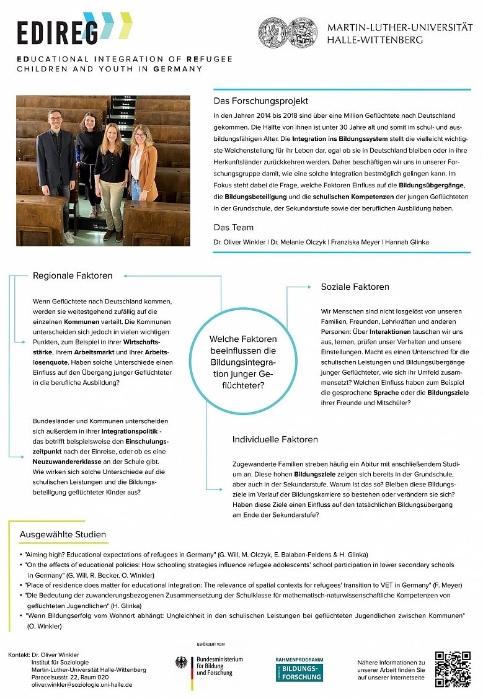

Overview
Background
Refugee children and youth find themselves in a special educational situation, shaped by humanitarian crisis, life-threatening experiences, traumatic events, separation from loved ones and peers, as well as material losses. These factors contribute to a critical phase of development in the biographies of young refugees. In their host countries, they must navigate through a multitude of acculturative stressors, including uncertainty surrounding their legal status, prolonged waiting periods, place of residence, substandard living conditions, and sometimes even a hostile social environment within their place of residence. With the advent of the COVID-19 pandemic, concerns are mounting that the already challenging educational circumstances for refugee children and youth are further deteriorating. Generally, there remains a dearth of research on the educational integration of this vulnerable population.
Goals
We aim to investigate the influence of family and school conditions on the educational attainment of refugee children and youth, while also comparing different regions. Our primary focus is on educational inequalities that arise during various educational transitions, such as the transition from primary school to secondary school, and subsequently to vocational education and training (VET). Additionally, we examine educational participation, specifically in lower versus upper secondary schools, as well as the acquisition of competencies in areas such as reading and mathematics. These processes are analyzed within the contexts of primary school, secondary school, and vocational training. We hypothesize that the educational integration of young refugees is a multilevel process that occurs at every stage of education. It is influenced by regional reception contexts, including factors such as educational systems, xenophobia, and the economic strengths of a region. Furthermore, the formal and informal learning environments, including schools, families and communities, are assumed to either facilitate, complicate or impede educational success. To analyze these processes, we utilize surveys and representative assessment data.
In order to foster the social participation of refugee children and youth, the German educational system bears the responsibility to provide suitable learning conditions and leverage the individual resources and knowledge of students. This is crucial for nurturing individual potentials, facilitating adaptation to the host environment, and compensating for disadvantages resulting from disrupted educational trajectories. It is an essential prerequisite for establishing equitable opportunities for educational attainment and participation. Fortunately, the current situation offers some advantages in this regard: Refugee families who immigrated in 2014/2015 have notably improved their German language skills (Brücker et al., 2019), feel welcomed in Germany (Siegert, 2019), and have expanded their social contacts with members of the host society (Brücker et al., 2020). EDIREG aims to investigate how and why young refugees can succeed at different educational stages and critical educational transitions, as well as identify potential barriers.
The increased presence of approximately 300,000 refugee students has significantly diversified schools in Germany. However, this increase is often accompanied by lower proficiency in the German language and limited opportunities for parental support, necessitating additional educational assistance. In light of this, the junior research group EDIREG poses the question: How effective are the political measures implemented for refugee education? While schooling is mandatory for minors from refugee families, educational policies primarily regulate attendance rather than the provision of support. Additionally, there are challenges such as insufficient capacities in schools, language barriers, and limited knowledge about the competencies of refugee children and youth. The lengthy asylum procedure, uncertain residency status, regional and sector-specific supply shortages, as well as limited proficiency in German, act as barriers to integration within the vocational training system. The federal states in Germany vary in their preparedness to address these challenges. Therefore, the junior research group examines which institutional measures have an impact on educational integration.
